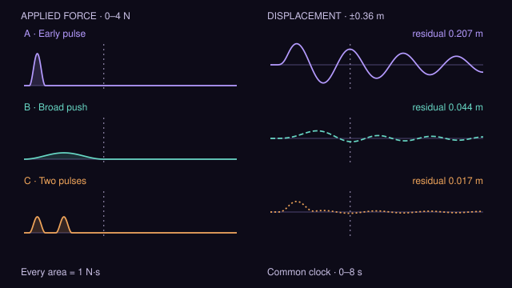

SAME IMPULSE
Same push integrated. Different motion.
Scrub to inspect · same fixed scales in every case
Read the study ↗Spacing is measured from onset to onset. Damped period 2.002 s.
Read the study
Follow one row from force to motion

The bottom row uses a 1 s gap. On the stage, choose Two pulses and Inspect second push. The arrow on the block shows its velocity just as the second pulse begins. At a 1 s gap the block is moving left and the new push acts to the right. Change the gap to 2 s and inspect again: the block is already moving right. The residual vibration rises from 0.017 m to 0.243 m.
Your pulse spacing
m x″ + c x′ + k x = F(t) · m = 1 kg · k = π² N/m · c = 0.3 N·s/m
x(0) = 0, x′(0) = 0
The spring pulls toward the resting position and damping opposes velocity. These two forces continue to act after the applied push ends.
Same area, different timing
A delivers one smooth pulse over 0.2–0.8 s. B spreads its push over 0–3 s. C splits the impulse equally between two 0.6 s pulses; its first center is at 0.5 s and the second follows by the selected spacing. Every force is zero outside the common 0–3 s window.
A pulse starting at a, with width w and impulse j, is F(t) = (j/w)[1 − cos(2π(t − a)/w)] on its support and zero elsewhere. Its exact area is j. A and B each use j = 1 N·s; C uses j = 0.5 N·s twice.
Applied impulse is not net impulse
The displayed 1 N·s counts the applied force F alone. Net force also includes −kx and −cx′. The momentum change is the integral of that net force, so equal applied impulse does not force equal final velocity.
Work is another integral, ∫F dx = ∫F x′ dt. Because the mass moves differently while each force acts, equal applied impulse also does not imply equal work or equal energy supplied.
How the numbers are computed
Each pulse is solved analytically as a constant-plus-cosine particular solution with a homogeneous term enforcing zero starting displacement and velocity. After the pulse ends, its response follows the exact free-oscillation solution. Linear superposition adds C’s two responses. Animation only chooses the time at which that solution is displayed.
Peak |x| is the largest displacement magnitude over the displayed 0–8 s interval. Velocity sign changes bracket extrema, which are refined by bisection. Curves are sampled for drawing only; changing playback speed does not change the solution.
What “residual at 3 s” means
Once the force ends, x(t) = e−α(t−3)[x₃ cos(ωd(t−3)) + ((v₃ + αx₃)/ωd) sin(ωd(t−3))], where α = c/(2m) and ωd = √(k/m − α²).
The reported residual is the envelope amplitude √(x₃² + ((v₃ + αx₃)/ωd)²) at 3 s. It is neither the instantaneous displacement nor a claim that this envelope is reached. It subsequently decays at the same rate in every case.
Changing C’s spacing changes both phase and decay time before this common measurement. A near half-cycle spacing leaves less vibration than a near whole-cycle spacing in this construction; damping prevents perfect cancellation.